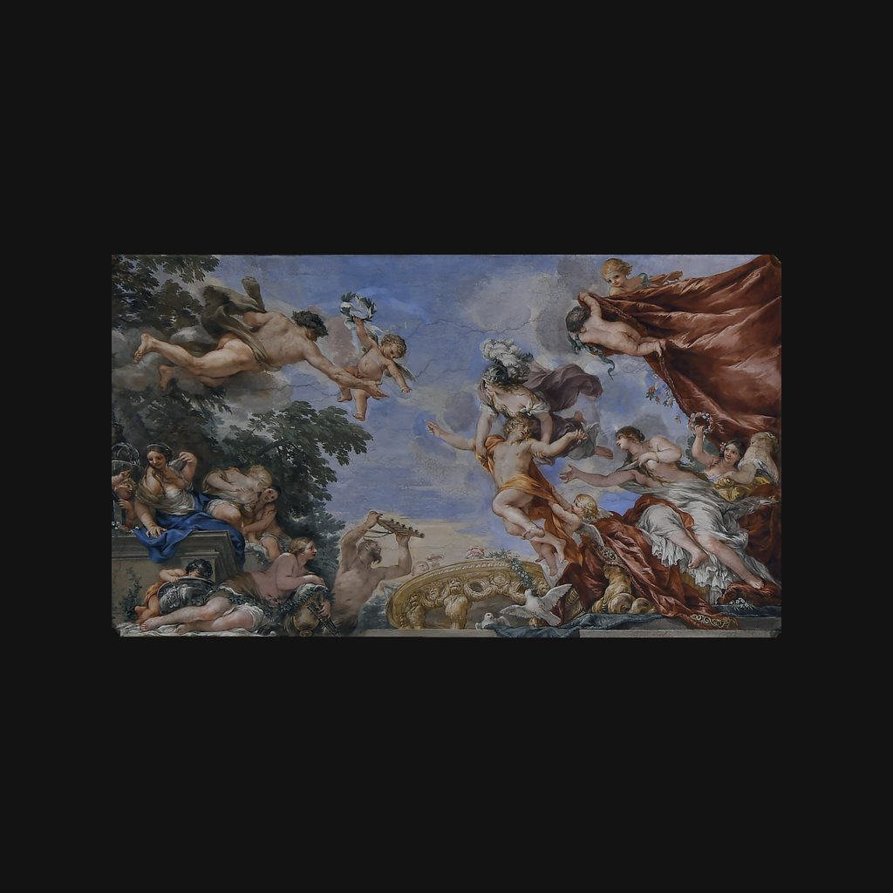

維納斯廳
彼得羅·達·科爾托納 · 1641—1642年
Sala di Venere
解說節錄
抬頭看天頂中央：庇護學問和藝術的智慧女神密涅瓦，正把一位年輕王子從維納斯的懷抱中，引向以力量和勇氣聞名的英雄海克力斯。維納斯代表享樂，海克力斯代表德行；智慧女神在引導王子從享樂走向德行。
這裡是「維納斯廳」，天頂的濕壁畫和灰泥裝飾，出自巴洛克畫家皮埃特羅·達·科爾托納，完成於一六四一到一六四二年。科爾托納是巴洛克大型裝飾繪畫的重要革新者，在此之前，他已經在羅馬巴貝里尼宮的大廳裡，畫過一幅歌頌教宗的天頂畫。
— 國語講稿 · Artvery
完整解說約 4 分鐘，在 Artvery App 裡收聽。國語、粵語、內地普通話三種語音，館內對準作品即可辨識播放。
即將上架 App Store
App 即將上架，敬請期待。上架後免費下載，每座博物館單獨購買，一次購買永久使用。
作品資訊
- 作者
- 彼得羅·達·科爾托納
- 年代
- 1641—1642年
- 位置
- 碧提宮 · 帕拉提納美術館與行星廳